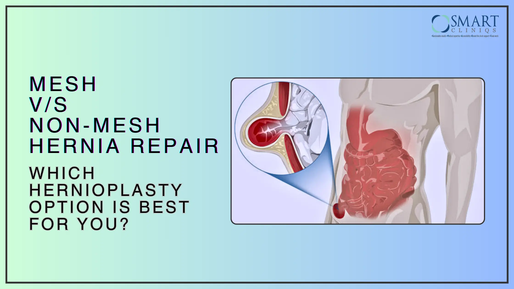

Mesh vs. Non-Mesh Hernia Repair: Which Hernioplasty Option is Best for You?
Hernia is a medical condition that occurs when an organ or a fatty tissue protrudes (or, squeezes) through a weak spot in the abdominal wall. Hernia can be painful and can give rise to serious complications.
A hernia becomes an emergency if it’s ‘incarcerated.’ It is a situation, where the tissue slips through the hernia and gets stuck there. If left untreated, it may lead to strangulation.
That’s when Hernioplasty comes into play - the surgery to repair a hernia and prevent such complications. There are primarily two techniques – mesh hernia repair and non-mesh hernia repair. Opting for either of these approaches can be challenging as both have their pros and cons. An experienced hernia surgeon can guide you through understanding which option is suitable, based on individual circumstances and health needs.
This blog will explore the nuances of mesh and non-mesh hernia repair, helping you navigate the options effectively.
What is Mesh Hernia Repair?
Mesh hernia repair is a surgical procedure that involves the use of synthetic or biological mesh to strengthen the abdominal wall, or the weakened tissue surrounding the hernia. The mesh serves as a flexible scaffold, reinforcing the muscle walls and preventing the hernia recurrence.
During mesh repair, the surgeon places a mesh over the hernia and secures it with sutures. The surgery can be performed laparoscopically, robotically, or it can be open.
Who is a good candidate for mesh repair?
An individual qualifies as a mesh hernia repair candidate under the following conditions:
- Large Or Recurrent Hernias – Individuals who have experienced hernia recurrence or have a larger hernia often benefit from mesh support.
- Complicated Hernias – Hernias that involve surrounding tissues or organs may require the strength and stability that mesh offers.
Mesh repair is especially effective for those individuals who have inguinal or ventral hernias, as additional support is needed in such situations.
What is Non-Mesh Hernia Repair?
Non-mesh hernia repair is also known as tissue-based repair, in which the patient’s natural tissues are utilized to close the defect. This method is usually performed in the case of small hernias.
During the surgery, the surgeon sutures the surrounding tissues together, restoring the integrity of the abdominal wall. This is a less complex procedure and a safer alternative for individuals with a history of allergic reactions to synthetic materials.
Who is a good candidate for non-mesh repair?
A good candidate for non-mesh repair surgery typically includes individuals who meet the following criteria:
- Preference for Natural Repair: Patients who prefer not to use synthetic materials in their bodies and want a more natural repair option.
- Certain Types of Hernias: People with specific types of hernias, such as small or uncomplicated inguinal or umbilical hernias.
- Previous Complications with Mesh: Patients who have experienced complications from previous mesh repairs, such as infection or chronic pain, may be better suited for non-mesh techniques.
It’s essential for potential candidates to discuss their specific situation with a healthcare provider to determine the best approach for their hernia repair.
Mesh vs. Non-Mesh Hernia Repair: A Comparison
The choice between mesh and non-mesh hernia repair depends on various factors, including the type of hernia, patient preferences, overall health, and the surgeon’s recommendation. It's essential for patients to discuss their options with a healthcare provider to determine the most appropriate approach.
- Procedure Differences: Mesh repair often involves the placement of synthetic material, while non-mesh repair relies on suturing the natural tissue.
- Recovery Time and Recurrence Rates: Mesh hernia repair results in shorter recovery times and lower recurrence rates. While non-mesh hernia repairs may have comparatively longer recovery times and a higher risk of recurrence.
- Suitability: Mesh repairs are often preferred for larger or recurrent hernias, while non-mesh repairs are more suitable for smaller, uncomplicated cases.
Pros and Cons of Mesh & Non-Mesh Hernia Repair
| Mesh Hernia Repair | |
| Pros | Cons |
| + Lower recurrence rates: In mesh hernia repair, the mesh provides greater support, minimizing the risk of recurrence. + Suitable for larger, more complicated hernias + Quicker recovery: Patients undergoing mesh repair, experience faster recovery and return to normal activities sooner. | - Mesh infection: Foreign material can sometimes lead to infections. - Mesh migration: In rare cases, the mesh can shift from its original placement. - Potential for chronic pain: Some patients may experience long-term pain or develop adhesions due to the presence of mesh. |
| Non-Mesh Hernia Repair | |
| Pros | Cons |
| + Avoids foreign materials: For patients who avoid synthetic materials or are allergic to certain materials, non-mesh repair is a suitable option. + Suitable for smaller, simpler hernias | - Higher recurrence rates: Non-mesh repairs can result in higher recurrence rates, specifically in the case of larger hernias. - Longer recovery time: Recovery may take longer for more complex hernias, compared to mesh repairs. |
While there are cons to both procedures, they can be minimized by consulting an experienced surgeon and adhering to post-surgery care guidelines.
Hernioplasty Procedure
Before any hernia repair procedure, the surgeon will analyze the type, size, and complexity of the hernia using diagnostic imaging techniques such as an MRI and/or CT scan. Based on the diagnosis, the type of surgery will be decided as per the appropriateness for repair as well as outcomes.
Pre-procedure instructions will include refraining from eating or drinking at least eight hours before the conduct. Patients who smoke will have to stop smoking two weeks prior to surgery, as smoking restricts oxygen flow and impairs the body’s ability to heal itself.
Recovery After Hernia Surgery: What to Expect
The recovery post-hernia surgery varies from patient to patient, depending on the type of surgery performed and the overall health of the patient. Some patients experience a lower level of pain after an open surgery, while others experience higher levels of pain and discomfort after a laparoscopic procedure.
The hospital stay of the patient depends entirely upon the surgery type and the complexity of the hernia. In the case of a minimally invasive laparoscopic procedure, patients can return home on the same day. Post-surgery, it’ll take one to four weeks for the patient to recover fully and return to routine activities. However, the patient will need to wait at least six weeks before returning to vigorous exercise.
Success in recovery hinges on following the post-operative guidelines as suggested by the surgeon.
Why Choose Delhi for Hernioplasty Surgery?
Delhi has emerged as a leading destination for hernioplasty surgery, attracting patients from around the world. The capital city boasts access to advanced healthcare facilities, equipped with the latest technology and surgical techniques. The following factors also influence an individual’s decision to choose Delhi for hernia surgery:
- Experienced Surgeons – Delhi houses some of the best hernia surgeons, many of whom specialize in both mesh and non-mesh repair techniques.
- Cost-Effective Treatments – Compared to many Western countries, hernia surgery is more accessible and affordable in Delhi, without any compromise in the quality of care delivered.
- High-Quality Care – Patients can expect comprehensive care, from initial consultations through to post-operative recovery, ensuring their needs are met at each step.
The combination of these factors makes Delhi, a preferred choice for hernia surgery.
Choosing the Right Hernia Surgeon in Delhi
Selecting the right surgeon for hernia repair in Delhi is indispensable to successful outcomes. Here are some tips for finding the best hernia surgeon in Delhi:
- Qualification: Look for a surgeon who is board-certified in General Surgery and has additional training or specialization in hernia repair.
- Years of Experience: Consider surgeons who have extensive experience, especially in hernia repairs, as this can contribute to better outcomes.
- Success Rates: Research the surgeon’s success rates with both mesh and non-mesh repairs. High success rates often indicate expertise in handling various complexities.
- Patient Testimonials: Read reviews and testimonials from previous patients to get insight into their experiences, the surgeon’s communication style, and the overall quality of care.
- Consultation: Schedule a consultation to discuss your case. A good surgeon will guide you through the risks and benefits of each approach.
One notable recommendation is Prof. (Dr.) Atul Peters, a highly regarded hernia specialist in Delhi, is known for his expertise in both mesh and non-mesh repair methods. His extensive experience and patient-centered approach make him an excellent choice for those seeking hernia repair.
Meet Prof. (Dr.) Atul N.C Peters: Expert in Hernia Surgery in Delhi
Dr. Atul N.C. Peters, Senior Director and Head of the Department (Bariatric, Minimal Access, and Robotic Surgery Dept., Max Hospital, Saket, Delhi), is renowned for his expertise in performing successful bariatric, minimal access, and robotic surgeries over the past two decades.?
Dr. Peters is a leading expert in performing hernia surgery, specializing in advanced procedures. With years of experience, he has earned a reputation for his innovative use of robotic technology in minimally invasive techniques. His approach emphasizes patient comfort and faster recovery times.
He has further established the department as a Centre of Excellence (CoE). With serious contribution and dedicated care towards patients, he has emerged as an international practitioner, thereby being acclaimed as a 'Surgeon of Excellence' by the Surgical Review Corporation.?
Frequently Asked Questions (FAQs)
What are the benefits of mesh repair vs. no mesh repair?
Mesh repair offers lower recurrence rates and is suitable for larger, more complicated hernias. Non-mesh repair, while having higher recurrence rates, avoids foreign materials and is ideal for smaller, uncomplicated cases.
How long does recovery take after hernia surgery?
Recovery time can vary depending on the type of repair. Mesh repairs often result in quicker recoveries, with many patients resuming normal activities within a week or two. Non-mesh repairs may take longer, generally ranging from a few weeks to a month.
What are the chances of hernia recurrence?
Recurrence rates vary between the two methods. Mesh repair typically has lower recurrence rates, especially for larger hernias, while non-mesh repairs can see higher rates, particularly in larger or more complex cases.
How do I choose between mesh and non-mesh repair?
Choosing between mesh and non-mesh repair should be based on the type of hernia, patient preferences, and medical history. Consultation with an experienced hernia surgeon can provide personalized recommendations that align with your health needs.
Conclusion
Deciding between mesh and non-mesh hernia repair is a significant decision that requires careful consideration of various factors, including the type of hernia, recovery expectations, and personal preferences.
Consulting with a highly qualified surgeon, such as Prof. (Dr.) Atul N.C Peters can help guide you toward the best choice for your situation. Whether you opt for mesh or non-mesh repair, understanding your options and selecting an experienced surgeon will set the foundation for a successful recovery and improved quality of life.
Resource Links
1. Hernia Repair Overview - Mayo Clinic
2. Mesh vs Non-Mesh Hernia Repair - American College of Surgeons
3. Hernia Repair Surgery – WebMD
4. Choosing the Right Surgeon - Cleveland Clinic
5. Minimally Invasive Hernia Repair - Johns Hopkins Medicine
Back to Blog